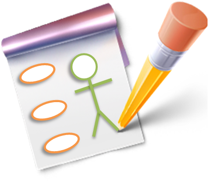

Tutorial Básico de UML
Introducción
En la medida que el software se ha vuelto más grande y complejo, éste debe ser estructurado de manera que pueda ser revisado, corregido y mantenido de una manera rápida y efectiva, incluso por personas que no han participado en su diseño y elaboración.
Ante dicha necesidad la mejor forma de abordar el problema es modelar, ésta actividad consiste en diseñar y estructurar el software antes de incluso haber escrito una línea de código y es la única forma de visualizar un diseño y comprobar que cumple con todos los requerimientos. En consecuencia los responsables del éxito del producto pueden estar seguros de que su funcionalidad y correcta, que las expectativas de los usuarios se cumplen, que las posibles futuras ampliaciones pueden ser acomodadas, todo ello mucho antes que la implementación haga que los cambios sean dificiles o peor aún, que el producto final resulte no respender a las necesidades reales de los clientes.
UML es un lenguaje gráfico que sirve para modelar, diseñar, estructurar, visualizar, especificar, construir y documentar software. UML proporciona un vocabulario común para toda la cadena de producción, desde quien recaba los requisitos de los usuarios, hasta el último programador responsable del mantenimiento. Es un lenguaje estándar para crear los planos de un sistema de forma completa y no ambigua. Fue creado por el Object Management Group, OMG, un consorcio internacional sin ánimo de lucro, que asienta estándares en el área de computación distribuida orientada a objetos, y actualmente revisa y actualiza periódicamente las especificaciones del lenguaje, para adaptarlo a las necesidades que surgen. El prestigio de este consorcio es un aval más para UML, considerando que cuenta con socios tan conocidos como la NASA, la Agencia Europea del Espacio ESA, el Instituto Europeo de Bioinformática EBI, Boeing, Borland, Motorla y el W3C, por mencionar algunos.
Bloques Básicos
Los elementos son abstracciones que actúan como unidades básicas de construcción. Hay cuatro tipos, los estructurales, los de comportamiento, los de agrupación y los de notación. En cuanto a los elementos estructurales son las partes estáticas de los modelos y representan aspectos conceptuales o materiales. Los elementos de comportamiento son las partes dinámicas de los modelos y representan comportamientos en el tiempo y en el espacio. Los elementos de agrupación son las partes organizativas de UML, establecen las divisiones en que se puede fraccionar un modelo. Sólo hay un elemento de agrupación, el paquete, que se emplea para organizar otros elementos en grupos. Los elementos de notación son las partes explicativas de UML, comentarios que pueden describir textualmente cualquier aspecto de un modelo. Sólo hay un elemento de notación principal, la nota.
Las relaciones son abstracciones que actúan como unión entre los distintos elementos. Hay cuatro tipos, la dependencia, la asociación, la generalización y la realización.
Los diagramas son la disposición de un conjunto de elementos, que representan el sistema modelado desde diferentes perspectivas. UML tiene nueve diagramas fundamentales, agrupados en dos grandes grupos, uno para modelar la estructura estática del sistema y otro para modelar el comportamiento dinámico. Los diagramas estáticos son: el de clases, de objetos, de componentes y de despliegue. Los diagramas de comportamiento son: el de Casos de Uso, de secuencia, de colaboración, de estados y de actividades.
Elementos
Elementos estructurales.

Describe un conjunto de objetos que comparten los mismos atributos, métodos, relaciones y semántica. Las clases implementan una o más interfaces.

Se trata de una clase, en la que existe procesos o hilos de ejecución concurrentes con otros elementos. Las líneas del contorno son más gruesas que en la clase “normal”

Agrupación de métodos u operaciones que especifican un servicio de una clase o componente, describiendo su comportamiento, completo o parcial, externamente visible. UML permite emplear un círculo para representar las interfaces, aunque lo más normal es emplear la clase con el nombre en cursiva.

Define una interacción entre elementos que cooperan para proporcionar un comportamiento mayor que la suma de los comportamientos de sus elementos.

Describe un conjunto de secuencias de acciones que un sistema ejecuta, para producir un resultado observable de interés. Se emplea para estructurar los aspectos de comportamiento de un modelo.

Parte física y por tanto reemplazable de un modelo, que agrupa un conjunto de interfaces, archivos de código fuente, clases, colaboraciones y proporciona la implementación de dichos elementos.

Elemento físico que existe en tiempo de ejecución y representa un recurso computacional con capacidad de procesar.
Elementos de Comportamiento.
Comprende un conjunto de mensajes que se intercambian entre un conjunto de objetos, para cumplir un objetivo especifico.
Especifica la secuencia de estados por los que pasa un objeto o una interacción, en respuesta a eventos.
Elementos de Agrupación y Notación.
Se emplea para organizar otros elementos en grupos.
Partes explicativa de UML, que puede describir textualmente cualquier aspecto del modelo